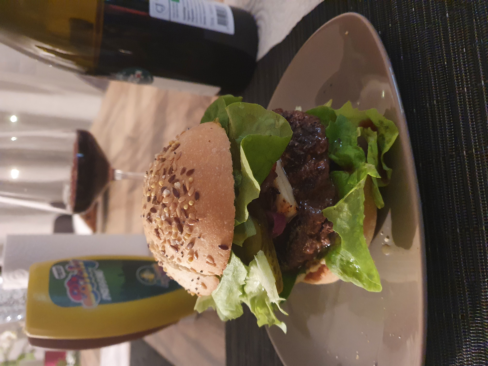

ALOM Architectures Logicielles Orientées Microservices
Introduction
About Me
Julien WITTOUCK
Freelance Solution Architect
I like
I like

I like

I like
_front_cover.png)
Proud owner of

I like


About You
🍎 IPhone vs Android 🤖
🐱 Cats vs Dogs 🐶
☕ Coffee vs Tea ☕
Java vs Node
ALOM - Objectifs 🎯
- Vision du développement Java/JEE en entreprise
- Principes fondateurs, besoins, contraintes, architectures
- Comment ça fonctionne ?
- Déploiements distribués, cloud
- Frameworks
- Outils / Middlewares
Planning du cours (prévisionnel)
- Introduction
- Handcrafting everything - 💙 servlets
- Java 5️⃣ to 1️⃣9️⃣
- Spring
- Persistance des données
- GUI
- Intéropérabilité
- Traitements asynchrones
- Patterns avancés/Cloud/Containers...
Planning du TP
- Setup
- Handcrafting everything - 💙 servlets
- Java 5️⃣ to 1️⃣9️⃣
- Spring
- Persistance des données, relationnel, NoSQL
- Spring MVC, JSP
- Web services
- Asynchronisme
- Patterns avancés
Outils
-
IDE : IntelliJ IDEA conseillé 😃
- Eclipse, Netbeans, VSCode sinon
- Tomcat
- Maven
- Git - Github
Java 17 (release sept. 2021)
Frameworks
- Spring
- JPA, JSP, JSF, JAX-WS, JAX-RS, JMS, Kafka
Références


Notation
Projet + Démo
🗓️ Rendu le mercredi 4 janvier
Besoin de me contacter ? 🗂️
📧 julien.wittouck [at] gmail.com
🐦 @CodeKaio

Besoins et contraintes
- 💾 Gestion de session/persistance de données
- 🔐 Sécurité
- ⛑️Gestion d’erreur, de transactions 💳
- 💪 Montée en charge (scalabilité)
- Déploiement distribués
- Load-balancing
- 🤝 Interopérabilité avec les partenaires
- 🚂 Intégration aux systèmes existants (legacy)
- ☁️ Compatibilité avec les produits cloud (Cloud Native)
Notions de framework
Fournit des services pour répondre aux besoins & contraintes.
JEE (Jakarta EE) est un framework, Spring est un framework
- Pools d’objets, montée en charge, gestion de session
- Transactions
- Web services
- Messaging
- Sécurité
Hardware / OS / Middleware / Software
- Hardware : Couche physique (CPU/RAM/Disque), virtualisé ou bare-metal
- OS : Système d'exploitation. Primitives d'usage de la couche physique (POSIX)
- Middleware : Environnement d'exécution d'applications, et services (Java / Tomcat)
- Framework : Support du développement
- Software : c'est nous ! 🖈
Ecriture d'applications
🥊 Monolith Vs Micro-services 🥊
Monolith
Application "tout-en-un"
- IHM (web)
- Services
- Un seul "package"
Ecriture d'applications
🥊 Monolith Vs Micro-services 🥊
Micro-services
- IHM
- Services métiers découpés
- Plusieurs "packages"
Ecriture d'applications
- Développement de composant séparés
- Composants métiers : EJB/Services
- Composants IHM : JSP/Web
- Web services
- Construction d’une application par assemblage de composants
- Composants métier/IHM
- Services middleware
Assemblage d'application
TP - Setup de vos postes !